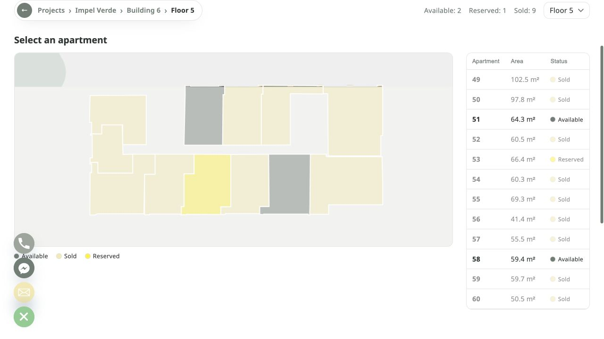
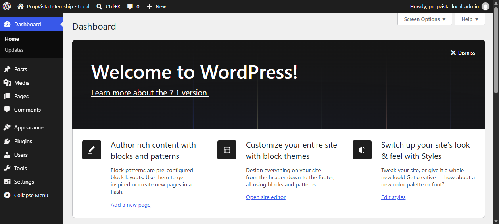
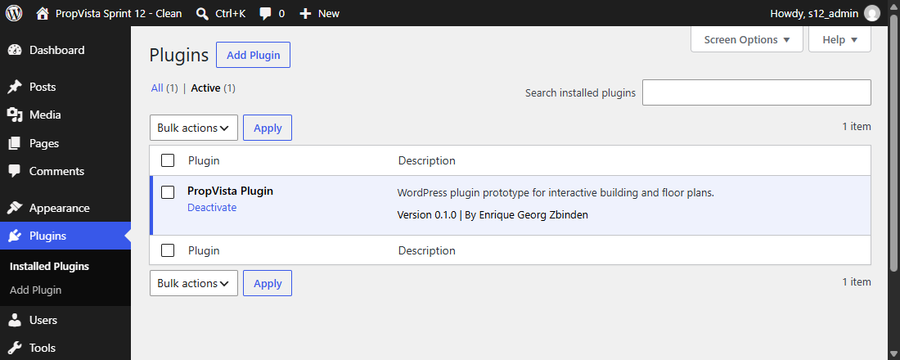
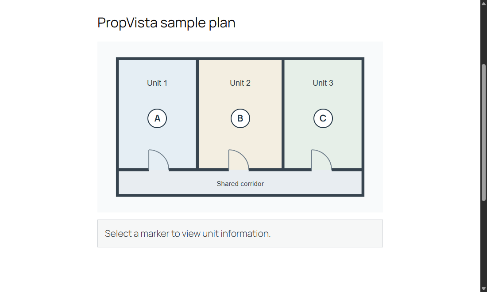
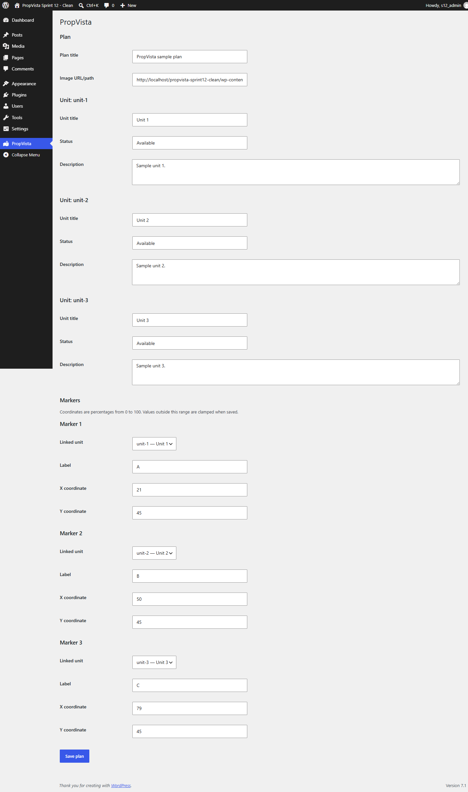
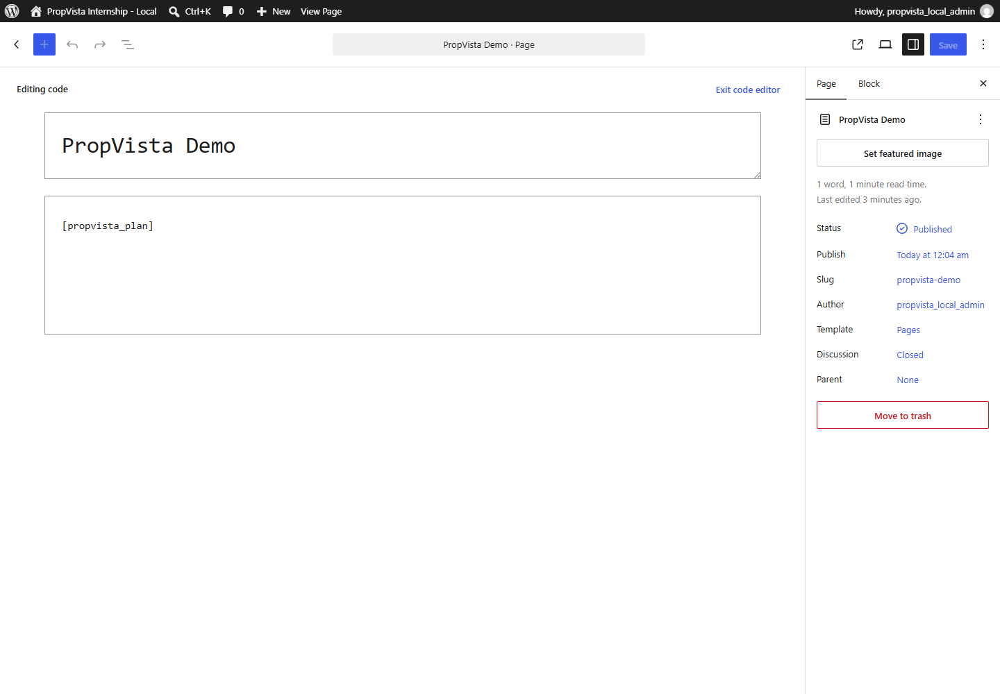
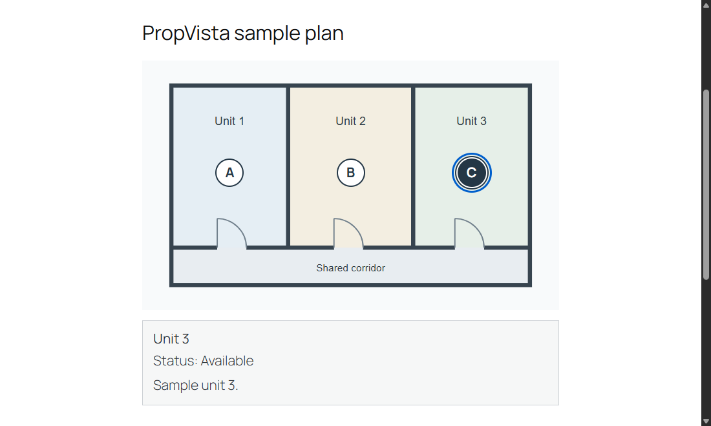
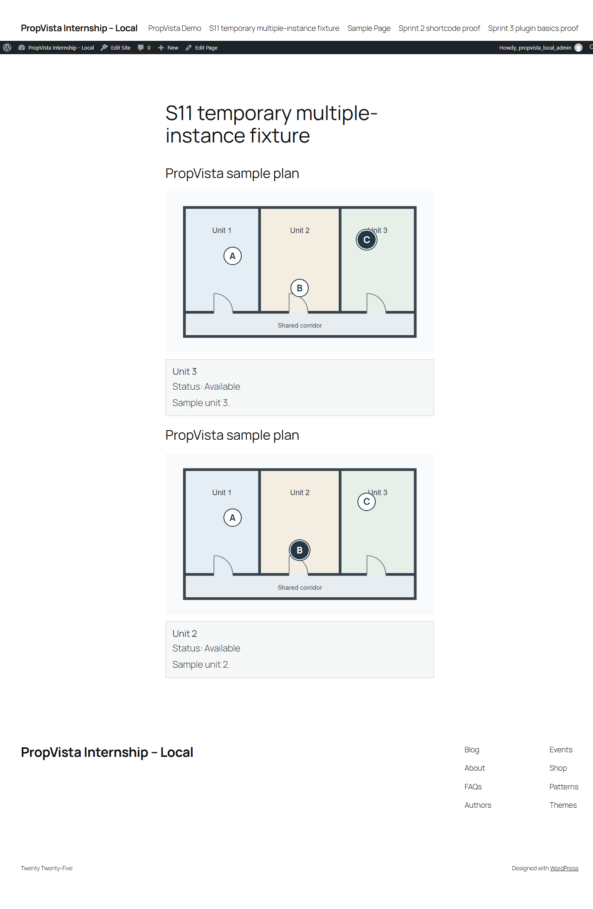

| Ansatz | Möglicher Vorteil | Aufwand und Grenze |
|---|---|---|
| Individuell je Kunde | Genaue Anpassung an den Kunden | Entwicklung und Wartung fallen je Projekt an |
| Drittanbieter- Plugin | Weniger eigene Erstentwicklung | Integration, Abhängigkeit, mögliche Lizenzen |
| Eigenes Plugin | Gemeinsame Basis für mehrere Projekte | Erstentwicklung, Anpassung und dauerhafte Wartung |







| Prüffrage | Verfahren | Beobachtung |
|---|---|---|
| Bleiben Daten erhalten? | Speichern, wiederladen und separat rücklesen | Persistenz bestätigt |
| Passt Marker zu Einheit? | A, B und C auswählen | Zugeordnete Daten angezeigt |
| Bleiben Instanzen getrennt? | Unterschiedliche Auswahl auf derselben Seite | Informationsbereiche unabhängig |
| Was passiert bei Randfällen? | Ungültige Daten, Tastatur und Kollision | Kontrollfälle geprüft, Kollision bleibt bekannte Grenze |
| Fachlich gelernt | Arbeitsweise | Ergebnisse selbst prüfen |
|---|---|---|
| PHP, WordPress und Browserinteraktion als gemeinsamen Ablauf verstehen | Früher einen vollständigen Kernablauf entwickeln Erweiterungen priorisieren Feedback von Tato nutzen | KI-Zusammenfassung vermischte geplante und umgesetzte Funktionen. Abgleich mit Code und Paket |